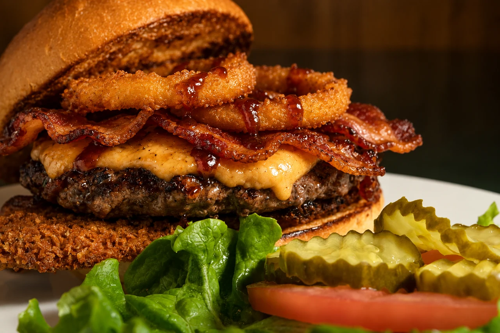

THE VJ’S MENU
Your cravings.
Covered.
Burgers worth both hands. Wings worth sharing. And always room for something sweet.
Browse here. Call (916) 260-2606 to ask about ordering.

A VJ’S FAVORITEBacon Cheese Burger$16SOMETHING FOR EVERY APPETITE
Find your kind of delicious.
Dietary & allergen information
V = vegetarian · GF = gluten-free · Spicy = contains heat. Recipe labels need kitchen verification; no GF items are verified yet. Tell our team about allergies before ordering. Menu and pricing may change.
Menu photography & credits
Photos from VJ’s existing asset collection are retained where available. The photos marked “Representative photo” illustrate the dish type; they are not photographs of VJ’s exact preparation or serving size.
These reusable images were found through web image searches and verified on Wikimedia Commons. Files were resized and converted to WebP; the sampler was cropped to focus on the food. Adapted images retain the licenses listed below.
- VJ's Signature Sampler — Famartin. 2018-02-22 16 52 42 Classic appetizer combo (Chips with spinach-artichoke dip, mozzarella sticks, honey-bbq buffalo wings and chicken quesadilla) at the Applebee's in Fair Lakes, Fairfax County, Virginia.jpg, CC BY-SA 4.0.
- Classic Hamburger — Len Rizzi (photographer, original image), reprocessed by Off-shell. Hamburger (black bg).jpg, Public domain.
- Teriyaki Salmon Burger — Kyle Lam. Salmon burger.jpg, CC BY-SA 2.0.
- Mediterranean Lamb Kebab — Maksym Kozlenko. 2023-01-20 Lamb Shish Kebab.jpg, CC BY-SA 4.0.
- Mixed Grill Kebab — User:Jpatokal. Arabic MixedGrill.JPG, CC BY-SA 4.0.
- Lamb Chop Dinner — Gatorfan252525. Lamb Chops from a Greek restaurant in Fort Lauderdale, Florida.jpg, CC BY-SA 4.0.
- Honey Sriracha Chicken Biscuit — CalebJay. North Carolina Style Southern Fried Chicken Biscuit Sandwich.jpg, CC BY-SA 4.0.
- Biscuits & Gravy — Elvenjewel777. Biscuits and gravy grits.jpg, CC BY-SA 4.0.
- Chicken & Waffle — Andy Li. Fried Chicken, Bacon & Waffles - The Breakfast Club 2023-09-03.jpg, CC0.
- Shrimp & Grits — vxla. Shrimp and Grits at Lüke Restaurant.jpg, CC BY 2.0.
- Country Boy Waffle — Andy Li. Egg & bacon and Belgian waffles - Brewhouse & Kitchen 2026-04-14.jpg, CC0.
FOUND YOUR FAVORITE?
Let’s make it a meal.
Call our team to check availability and arrange your order.